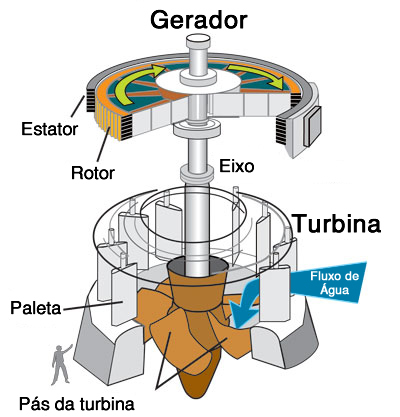
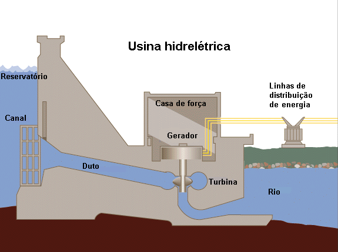
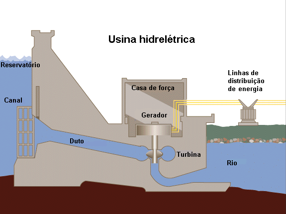
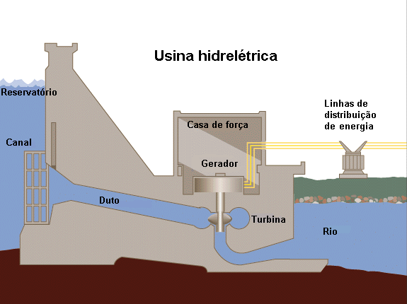

A primeira hidrelétrica do mundo foi a usina de Pearl Street, construída em Nova York em 1882 pelo inventor
americano Thomas Edison. A usina foi construída para fornecer energia elétrica para iluminar as ruas da
cidade de Nova York, substituindo as lâmpadas de gás existentes na época.
A usina de Pearl Street utilizava um gerador elétrico movido a vapor, que alimentava um sistema de cabos
elétricos subterrâneos que distribuíam eletricidade para as lâmpadas de rua da cidade. A usina era capaz de
fornecer eletricidade suficiente para iluminar cerca de 5.000 lâmpadas de rua.
A usina de Pearl Street foi um marco importante na história da energia elétrica, e abriu caminho para o
desenvolvimento de sistemas elétricos de distribuição em todo o mundo. Desde então, a hidrelétrica tornou-se
uma das principais fontes de energia elétrica em todo o mundo, fornecendo eletricidade para milhões de
pessoas em todo o mundo.
Primeira hidrelétrica do Brasil
A primeira hidrelétrica do Brasil foi a Usina de Marmelos, construída em 1889 na cidade de Diamantina, em
Minas Gerais. A usina foi construída para abastecer a cidade com energia elétrica para o funcionamento de
lâmpadas a arco elétrico.
A Usina de Marmelos utilizava a energia hidráulica do rio Jequitinhonha para movimentar as turbinas que
geravam
eletricidade. A usina tinha uma capacidade instalada de cerca de 12,5 quilowatts, o que era suficiente para
iluminar cerca de 150 lâmpadas de arco elétrico na cidade.
PRIMEIRA HIDRELÉTRICA DO BRASIL.
Qual o custo de Construção?
O custo de construção de uma hidrelétrica pode variar significativamente, dependendo de vários fatores, como
o tamanho da usina, a topografia do local, o tipo de tecnologia utilizada, a complexidade do projeto, entre
outros. No geral, a construção de uma hidrelétrica é um empreendimento de grande porte que requer
investimentos significativos.
Os custos envolvidos na construção de uma hidrelétrica podem incluir a preparação do terreno, a construção
de barragens, turbinas, geradores, sistemas de transmissão de energia, estradas e infraestrutura de suporte,
além de despesas com mão de obra, equipamentos e materiais.
De acordo com estimativas do setor, o custo médio de construção de uma hidrelétrica pode variar de cerca de
US$ 1.000 a US$ 7.000 por quilowatt de capacidade instalada, dependendo da escala do projeto e das condições
locais. Isso significa que uma usina hidrelétrica com capacidade instalada de 1.000 MW pode custar entre US$
1 bilhão e US$ 7 bilhões para ser construída.
Como Funciona?
Para o funcionamento de uma hidreletrica a usina sera construida proximo a uma nascente ou rio,
aonde o mesmo tera uma barragem para aumentar o volume da agua e logo apos a água sera coletada
e ativará as turbinas, gerando energia mecânica, terminando em um canal de descarga, através
do qual é devolvida a sua origem. Diretamente conectado à turbina, está o gerador elétrico rotativo
(alternador), que transforma em energia elétrica a energia mecânica recebida pela turbina.

FUNCIONAMENTO DA TURBINA.
Ilustrações do Funcionamento:

País que mais usa?
O Brasil é o país que mais usa hidrelétrica como fonte de energia elétrica em todo o mundo. Segundo dados do
Ministério de Minas e Energia, em 2020, a geração hidrelétrica no país representou cerca de 61,9% da matriz
elétrica brasileira, o que equivale a cerca de 90,4 gigawatts (GW) de capacidade instalada.
A energia hidrelétrica é uma das principais fontes de energia elétrica no Brasil devido à grande quantidade
de rios e recursos hídricos disponíveis em todo o país. Além disso, a hidrelétrica é uma fonte de energia
limpa e renovável, o que a torna uma opção atraente do ponto de vista ambiental.
As tecnologias Introduzidas Recentemente, visão aumentar a flexibilidade das usinas atuais, com
mecanismos de turbinas de fluxo axial, sistemas de
armazenamento de energia, hidrelétricas flutuantes e tecnologia de ondas e redes inteligentes.

 
